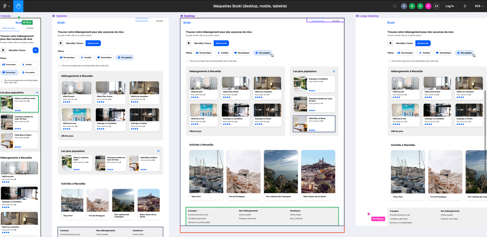

ARCHIWEBOS
Sur ce projet j'ai étais envoyé en renfort comme développeur front-end d’une équipe qui travaille sur la conception du site portfolio d’une architecte d’intérieur.
Rôle
Developpeur Front-End
Tâches
Récupération des travaux depuis le back-endRéalisation du filtre des travauxCodez la page de connexionEnvoi d’un nouveau projet au back-end

Je suis heureux de vous présenter le site final en version desktop. Ce site a été entièrement développé en utilisant les langages HTML et CSS, en prenant comme base les maquettes fournies par les designers. En tant qu'intégrateur, mon rôle a consisté à traduire fidèlement ces maquettes en code, en veillant à ce que toutes les fonctionnalités et animations demandées par le client soient intégrées de manière précise et harmonieuse.

Au cours du processus de développement, j'ai accordé une attention particulière aux détails, en m'assurant que chaque élément visuel correspondait exactement à la vision des designers. J'ai également pris en compte les différentes interactions et animations spécifiées par le client, en les implémentant de manière fluide et attrayante pour offrir une expérience utilisateur optimale.

En plus de l'intégration des maquettes, j'ai également veillé à optimiser le code HTML et CSS pour assurer une performance optimale du site. J'ai utilisé les bonnes pratiques en matière de structuration et de sémantique du code, ce qui permet une meilleure maintenabilité et facilité d'évolution du site à l'avenir.
Visiter le site